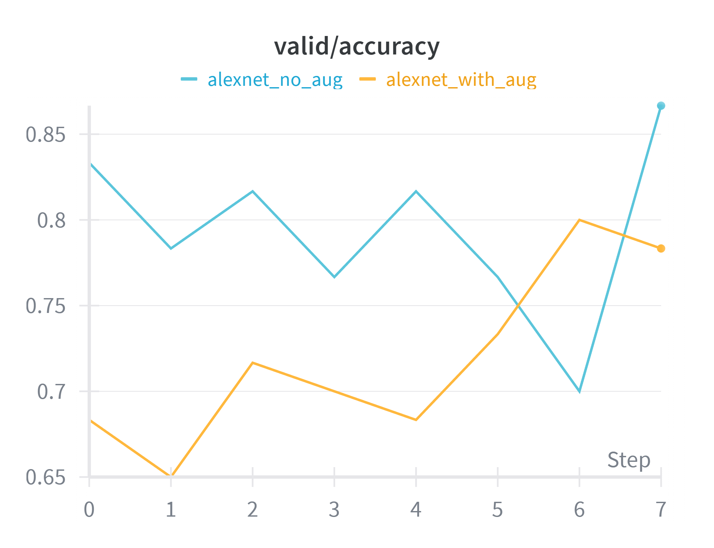
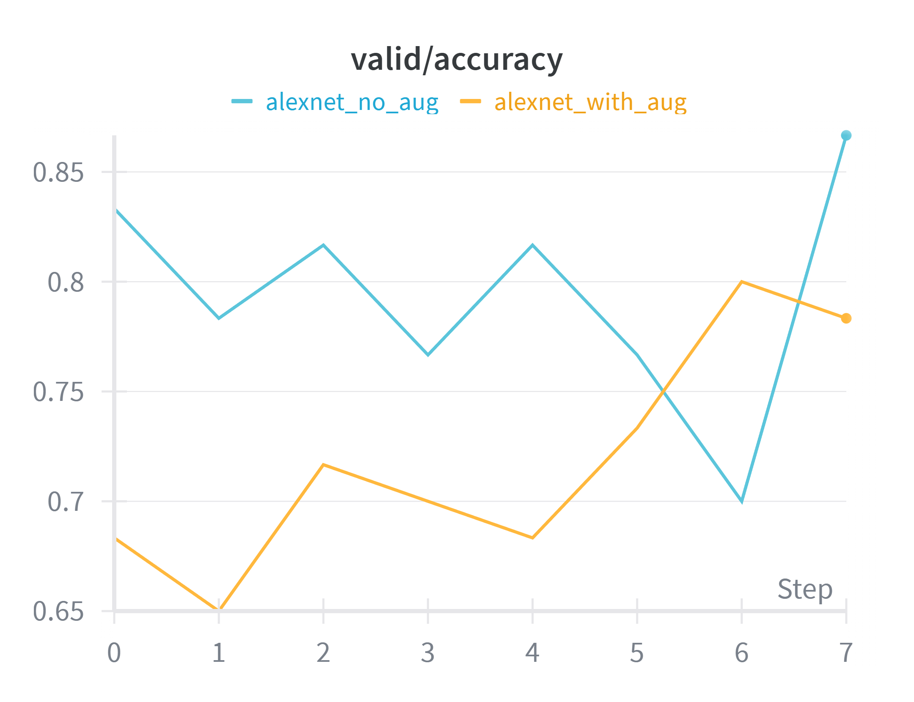

Dataset & Preprocessing
The dataset consists of 240 images of license plates:
- 120 labeled as clear
- 120 labeled as obscured
Images were collected manually and roughly reflect real-world camera conditions (lighting variation, different vehicles, varying plate angles). Obstructions include blur, glare, dirt, weather, and partial occlusion.
Preprocessing steps:
- Resize to
224×224pixels. - Convert to RGB tensors.
- Normalize using ImageNet mean and standard deviation.
- Split into 70% training and 30% validation.
Data Augmentation
Certain experiments included light augmentation:
- Random horizontal flip
- Small random rotations
- Brightness / contrast jitter
Because the dataset is small, augmentation is important to reduce overfitting and mimic more realistic variation in plate images.
AlexNet Architecture
AlexNet is a classic convolutional neural network originally developed for the ImageNet Large Scale Visual Recognition Challenge. In this project, the standard PyTorch AlexNet implementation was adapted for binary classification.
The main components are:
- Convolution + ReLU layers with learned filters
- Max pooling layers for downsampling
- Fully connected (dense) layers
- Dropout layers to reduce overfitting
The final classifier layer was replaced with a 2-unit output (clear vs. obscured) and trained
with cross-entropy loss.
Model Variants
- Pretrained AlexNet – initialized with ImageNet weights.
- Baseline AlexNet – standard training on this dataset.
- Untrained AlexNet – random initialization.
- ResNet18 – deeper residual network for architecture comparison.
Comparing these models highlights the impact of transfer learning and architecture depth on a small, specialized dataset.
Training Setup & Hyperparameters
Optimization
- Optimizer: SGD with momentum
- Loss: CrossEntropyLoss
- Device: GPU in Google Colab (when available)
Hyperparameters
- Batch sizes: 16 and 64 (batch-size experiment)
- Learning rates: 1e-3 and 1e-4 (LR tuning)
- Epochs: 30 per run
Experiment Tracking
Training and validation metrics were logged with Weights & Biases (wandb), including:
- Accuracy and loss curves
- Run-to-run variation
- Generalization gap (train vs. validation accuracy)
Experiments & Visualizations
Experiment 1: Batch Size Comparison
We trained AlexNet with batch sizes of 16 and 64 to measure training stability and generalization. Larger batch sizes produced smoother training curves but slightly lower validation accuracy.
- Batch 16: faster learning, more variation across epochs.
- Batch 64: smoother curves, slightly worse best validation accuracy.
Plots shown below:
img/BATCH_train.png– training accuracy for batch sizes 16 and 64img/BATCH_valid.png– validation accuracy for batch sizes 16 and 64
Both plots come from the wandb train/accuracy and valid/accuracy panels filtered to the two batch-size runs.

Experiment 2: Learning Rate Tuning
We compared learning rates of 1e-3 and 1e-4. A learning rate of 1e-3 converged faster and yielded the best validation accuracy, while 1e-4 was more conservative but slower to reach its peak.
Plots shown below:
img/LE_train.png– training accuracy for different learning ratesimg/LE_valid.png– validation accuracy for different learning rates
These curves visualize how step size affects convergence speed and final performance.


Experiment 3: Data Augmentation
We trained AlexNet with and without augmentation. Augmentation (random flips, rotation, brightness jitter) reduced overfitting and improved validation accuracy by roughly 3–5% on this small dataset.
Plots shown below:
img/AUG_train.png– training accuracy with vs. without augmentationimg/AUG_valid.png– validation accuracy with vs. without augmentation
The validation plot highlights how augmentation helps generalization compared to a no-augmentation baseline.
 

Experiment 4: Model Comparison
Finally, we compared AlexNet variants with a deeper ResNet18 model. Pretrained AlexNet achieved the best performance among AlexNet runs (~86–87% validation accuracy), while ResNet18 reached the highest overall validation accuracy on this task.
Plot shown below:
img/res_vs_alex.png– bar chart of best validation accuracy for ResNet18 and AlexNet variants
This comparison summarizes how architecture and initialization affect peak validation performance.
Takeaways
- Transfer learning (pretrained AlexNet) clearly improves performance on a small, domain-specific dataset, reaching ~86–87% validation accuracy.
- Data augmentation and appropriate learning rates are crucial for controlling overfitting.
- ResNet18, a deeper residual architecture, outperformed AlexNet overall but is more complex.
- Even an imperfect clarity classifier can be useful in an ALPR pipeline to route difficult images for extra processing or review.